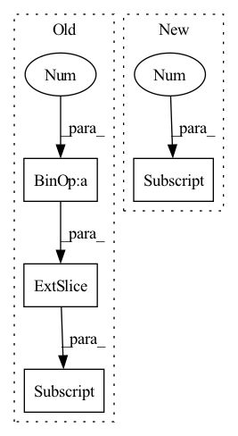

Pattern ID :1699

Before Change
xy = torch.sigmoid(p[..., 0:2]) + grid_xy // x, y
wh = torch.exp(p[..., 2:4]) * anchor_wh // width, height
p_conf = torch.sigmoid(p[..., 4:5]) // Conf
p_cls = p[..., 5:5 + self.nc]
// Broadcasting only supported on first dimension in CoreML. See onnx-coreml/_operators.py
// p_cls = F.softmax(p_cls, 2) * p_conf // SSD-like conf
p_cls = torch.exp(p_cls).permute((2, 1, 0))
p_cls = p_cls / p_cls.sum(0).unsqueeze(0) * p_conf.permute((2, 1, 0)) // F.softmax() equivalent
After Change
p = p.view(-1, 5 + self.nc)
xy = torch.sigmoid(p[..., 0:2]) + grid_xy[0] // x, y
wh = torch.exp(p[..., 2:4]) * anchor_wh[0] // width, height
p_conf = torch.sigmoid(p[:, 4:5]) // Conf
p_cls = F.softmax(p[:, 5:85], 1) * p_conf // SSD-like conf
return torch.cat((xy / ngu[0], wh, p_conf, p_cls), 1).t()
In pattern: SUPERPATTERN
Frequency: 4
Non-data size: 4
Instances
Fragment ID: 6731446
Project Name: nightsnack/yolobile
Commit Name: 636c1cff7a91c0b54c996ef48b36274b08e4a8b8
Time: 2019-08-11
Author: glenn.jocher@ultralytics.com
File Name: models.py
M Class Name: YOLOLayer
N Class Name: YOLOLayer
M Method Name: forward(4)
N Method Name: forward(4)
M Parent Class: nn.Module
N Parent Class: nn.Module
M File Name: models.py
N File Name: models.py
M Start Line: 126
M End Line: 147
N Start Line: 126
N End Line: 135
'>
Before Change
def forward(self, x):
first_h_a = self.initHidden_alpha(x.shape[1])
first_h_b = self.initHidden_beta(x.shape[1])
self.emb = self.embedding(x)
if self.drop < 1:
After Change
out = torch.zeros((batch_size, time_steps, self.hidden_dim))
for cur_time in range(time_steps):
cur_x = x[:, : cur_time + 1, :]
out[:, cur_time, :] = self.retain_encoder(cur_x)
return out
'>
Fragment ID: 6731444
Project Name: yhzhu99/covid-ehr-benchmarks
Commit Name: b3d4ba85ad8e8cfeb3e45e07e5fadfa3fd4a25fa
Time: 2022-06-25
Author: yhzhu99@gmail.com
File Name: app/models/backbones/retain.py
M Class Name: RETAIN
N Class Name: RETAIN
M Method Name: forward(2)
N Method Name: forward(2)
M Parent Class: nn.Module
N Parent Class: nn.Module
M File Name: app/models/backbones/retain.py
N File Name: app/models/backbones/retain.py
M Start Line: 64
M End Line: 83
N Start Line: 44
N End Line: 53
'>
Before Change
if i == 0:
rec_features.append(rec_feature[:, :inputs[i].size(1)])
else:
rec_features.append(rec_feature[:, \
inputs[i-1].size(1):inputs[i-1].size(1)+inputs[i].size(1)])
"""
if i == 0:
rec_features.append(rec_feature[:, :outs[i].size(-1)])
After Change
inputs[0][i-1].size(1):inputs[0][i-1].size(1)+inputs[i].size(1)])
else:
if i == 0:
rec_features.append(rec_feature[:, :sizes[0]])
curr = sizes[0]
else:
rec_features.append(rec_feature[:, \
'>
Fragment ID: 6731445
Project Name: pliang279/multibench
Commit Name: 72e3344b766884b9160fd383b13945be06819481
Time: 2021-06-05
Author: blairc@andrew.cmu.edu
File Name: training_structures/Contrastive_Learning.py
M Class Name: MMDL
N Class Name: MMDL
M Method Name: forward(3)
N Method Name: forward(3)
M Parent Class: nn.Module
N Parent Class: nn.Module
M File Name: training_structures/Contrastive_Learning.py
N File Name: training_structures/Contrastive_Learning.py
M Start Line: 39
M End Line: 52
N Start Line: 37
N End Line: 56